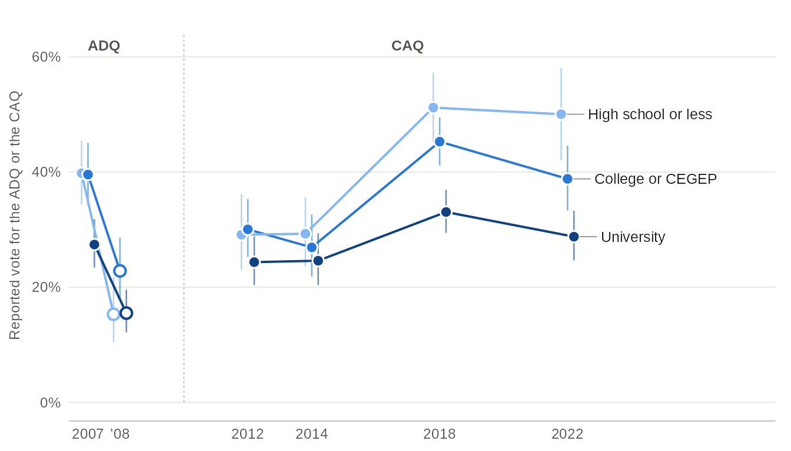
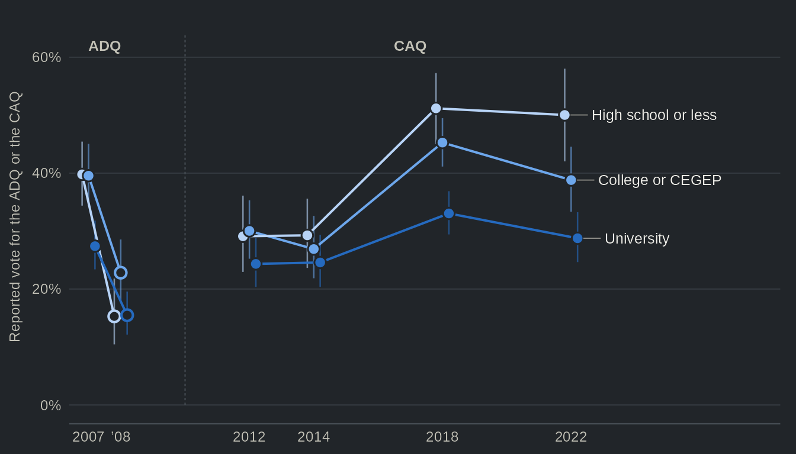

This page downloads 11 studies (about 16 MB) the
first time it runs. options(qesR.cache = "disk") keeps them
on disk for later sessions.
For some years now, the Canadian Election Study has had a simple
point of entry. The cesR
package’s get_decon() returns one data frame of the 2019
study, with 21 variables under plain names (education,
income_cat, lr, econ_retro…) and
readable labels. The Quebec Election Studies had no such file. Their
harmonization in qesR, qes_harmonize(), is strict by
design: one target per question, a comparability grade for each study’s
question and a reason for each missing value. It is the right tool when
the difference between two questions matters. However, many uses do not
call for that much: a descriptive table, a control variable, a first
look at 25 years of data. qes_decon() answers this need. It
returns one data frame for the 11 harmonized studies, with 47,038 rows
(one per respondent and wave) and 35 columns of data, one per concept,
even where the wording or the answer options differ from one study to
the next. The price is exactness. The categories are coarse, and no
column claims that two studies asked the same question.
What the file holds
d <- qes_decon(lang = "en")lang = "fr" gives the labels in French; the column names
stay the same. The first rows:
d[1:4, c("study", "wave", "weight", "gender", "education", "vote_choice", "vote_type")]
#> study wave weight gender education vote_choice
#> 1 qes2022 cps 1.4628887 Man No high school diploma CAQ
#> 2 qes2022 pes 1.4407098 Man No high school diploma CAQ
#> 3 qes2022 cps 0.1474534 Man University QS
#> 4 qes2022 cps 0.4824134 Man University <NA>
#> vote_type
#> 1 Vote intention (undecided pushed)
#> 2 Reported vote (after the election)
#> 3 Vote intention (undecided pushed)
#> 4 Vote intention (undecided pushed)The first columns identify the row: study,
year, wave and qes_id, the
respondent’s identifier within the study. The file has 40,986
respondents, and a respondent of a panel has one row per wave. The
socio-demographic columns (education, income, language, religion,
region…) repeat on every row of a respondent, while the vote, turnout
and attitudes sit on the row of the wave that asked them: the vote
intention on the campaign wave, the reported vote on the post-election
wave. weight is the recommended weight of the study and
wave, rescaled to a mean of 1 within each, and weight_var
names its source. Of the 11 studies, 6 have such a weight on every row:
QES 2007, QES 2012, QES 2014, QES 2018, 2018 panel and QES 2022. The
others have NA. The QES 2008 has no recommended weight,
since its weights are calibrated on the reported vote, and the weights
of the following studies are not validated: 1998 polls, 2007 panel, CROP
polls and 2012 panel. attr(d, "weights") gives the detail,
wave by wave, and the weights table
describes each study’s weight.
The columns
The table below is generated from the relaxed specification that
ships with qesR (qes_spec("relaxed")). A study counts as
covered when the column has at least one value there. Each name links to
the column’s section of the variable reference, which gives
each study’s source variable and recoding rule.
| Column | Concept | Categories | Studies | How it was relaxed |
|---|---|---|---|---|
citizenship |
Citizenship | Canadian citizen · Not a Canadian citizen | 2 (2018 panel, 2022) | Canadian citizenship where a study recorded it: asked directly in 2022, and taken in the 2018 panel from the screening question on the right to vote in the coming Quebec election, so that every respondent of that panel is a citizen. |
yob |
Year of birth | number, 1900-2010 | 6 (2007, 2008, 2012, 2014, 2018, 2022) | The year of birth as reported; the studies that asked only an age group have none (see age_group). |
age_group |
Age group | 18-34 · 35-54 · 55 and over | all 11 | Three age groups (18-34, 35-54, 55 and over), from the study’s own age bands or from the age at the start of fieldwork; respondents under 18 are missing. |
gender |
Gender | Man · Woman · Non-binary · Another gender | all 11 | Gender or sex as each study asked it: man or woman everywhere, and in 2022 also non-binary or another gender; the questions differ, the categories do not. |
education4 |
Education (four groups) | No high school diploma · High school diploma · College, CEGEP or trade school · University | 9 (2007, 2007 panel, 2008, CROP, 2012, 2014, 2018, 2018 panel, 2022) | Each study’s levels are grouped into four: no high school diploma, high school, college (CEGEP, technical or trade school) and university, including some university; the 2007 panel and the CROP polls asked years of schooling, so their high school group also holds those who left secondary school without a diploma, and their college group may hold some respondents with some university but no degree. qes1998 is missing (not mappable): the middle group of its pooled file, 10 to 15 years of schooling, spans high school and college (education, in three groups, includes it). The strict target of the same name in qes_harmonize() groups differently: its lowest group is primary or less. |
education |
Education | No high school diploma · High school to college (CEGEP) · University | 10 (1998, 2007, 2007 panel, 2008, CROP, 2012, 2014, 2018, 2018 panel, 2022) | Each study’s levels are grouped into three: no high school diploma, high school to college (a high school diploma, CEGEP, technical or trade school) and university, including some university. These are the groups of education4 with high school and college joined, which lets qes1998 in. Where a study asked years of schooling (the 2007 panel, the CROP polls and the CROP respondents of qes1998), the bands do not follow diplomas: some respondents without a diploma (10 years in qes1998; 8 to 10 years in the others, as Quebec high school ends after 11 years) count as high school to college, and some university students (14 or 15 years) are not counted in university. |
income_cat |
Household income (thirds) | Low (bottom third) · Middle · High (top third) | 9 (2007, 2007 panel, 2008, CROP, 2012, 2014, 2018, 2018 panel, 2022) | Household income in thirds of each study’s own respondents: income brackets are never split, so a third holds the whole brackets whose midpoint falls in it and is rarely exactly a third; the dollar limits differ from study to study. |
language |
Mother tongue | French · English · Other | all 11 | The language first learned in childhood, in three groups; a respondent who reported French and another language is French, and English and a language other than French is English, and the 1998 CREATEC respondents are French by the design of their sample. |
language_fr |
French as a mother tongue | Yes · No | all 11 | Yes when French is among the mother tongues reported, so a respondent with two mother tongues can be yes in both language_fr and language_eng. |
language_eng |
English as a mother tongue | Yes · No | all 11 | Yes when English is among the mother tongues reported, so a respondent with two mother tongues can be yes in both language_eng and language_fr. |
religion |
Religion | Catholic · Protestant · Other Christian · Other religion · No religion | 4 (2012, 2014, 2018, 2022) | The religion the respondent belongs to, in five groups; the 2022 question offers a long list, where agnostic counts as no religion, and the other studies first ask whether the respondent belongs to a religion at all. |
marital |
Marital status | Married or living with a partner · Separated or divorced · Widowed · Single, never married | 4 (2012, 2014, 2018, 2022) | Married or living with a partner, separated or divorced, widowed, or never married; 2012 and 2014 asked the official civil status, with no common-law option, so some partners who live together are never married there. |
employment |
Employment | Working (employee or self-employed) · Unemployed · Retired · Student · At home, unable to work or other | 9 (2007, 2007 panel, 2008, CROP, 2012, 2014, 2018, 2018 panel, 2022) | The main employment status in five groups; a respondent who gave two statuses, such as retired and working, takes the one that is not work, and at home, unable to work and other statuses are other. In the 2018 panel only web respondents were asked about employment, so its telephone respondents appear as don’t know or refused. |
union |
Union membership | Yes · No | 3 (2014, 2018, 2022) | Whether the respondent belongs to a union in 2022, but whether the respondent or anyone in the household does in 2014 and 2018 (in 2018, respondents who live with their parents were asked about their family: parents, brothers or sisters). Only these three studies ask it, and 2022 asks it after the election, so its campaign-only respondents are missing. |
region |
Region | Montreal CMA · Quebec CMA · Rest of Quebec | 9 (2007, 2007 panel, 2008, CROP, 2012, 2012 panel, 2014, 2018, 2018 panel) | The Montreal census metropolitan area, the Quebec City census metropolitan area or the rest of Quebec, from each study’s region or sub-region variable, with the boundaries each study used. |
region_admin |
Administrative region | 17 categories (Bas-Saint-Laurent, Saguenay–Lac-Saint-Jean…) | 5 (2007, 2007 panel, 2012, 2014, 2018) | The 17 administrative regions of Quebec, where a study recorded them or sub-regions that fit within them; the sub-regions of the 2007 study and the 2007 panel that split a region are joined. |
born_canada |
Born in Canada | Yes · No | 4 (2012, 2014, 2018, 2022) | Born in Canada or not, as each study asked it: from the birthplace (Quebec, elsewhere in Canada or abroad), or asked directly in 2022. |
born_quebec |
Born in Quebec | Yes · No | 3 (2012, 2014, 2018) | Born in Quebec or not, from the birthplace question (Quebec, elsewhere in Canada or abroad); 2022 asked only whether the respondent was born in Canada, so it is missing there. |
vote_choice |
Provincial vote choice | 10 categories (PLQ, PQ…) | all 11 | The reported vote where a study asked it, else the vote intention with the undecided pushed toward the party they lean to, else the first intention question (the pooled vote_choice); vote_type says which, and the parties are those each study offered. |
vote_type |
Question of the vote choice | Reported vote (after the election) · Vote intention (undecided pushed) · Vote intention (first question) | all 11 | Which question vote_choice comes from on each row: the reported vote, the pushed intention or the first intention question. |
turnout |
Turnout (reported) | Yes · No | 10 (1998, 2007, 2007 panel, 2008, 2012, 2012 panel, 2014, 2018, 2018 panel, 2022) | Whether the respondent says they voted in the Quebec general election of the study, asked after it; the wordings and answer options differ, some offering several ways of not voting. |
vote_prev |
Vote at the previous provincial election | 9 categories (PLQ, PQ…) | 5 (1998, 2007 panel, CROP, 2014, 2022) | The party of the reported vote at the Quebec general election before the study; those who did not vote are missing, the sources name the election recalled, and the 1998 question names only the PLQ and the PQ. |
pid |
Provincial party identification | 10 categories (PLQ, PQ…) | 6 (2007, 2008, 2012, 2014, 2018, 2022) | The Quebec party the respondent identifies with, or none, as each study asked it; the parties offered differ from study to study. |
lr |
Left-right self-placement (0-10) | number, 0-10 | 5 (2012, 2014, 2018, 2018 panel, 2022) | Self-placement on a left-right scale from 0 (left) to 10 (right); a scale of another length would be rescaled to 0-10, and every study that asked one used 0 to 10. |
interest |
Interest in politics | Low · Medium · High | 7 (2007, 2007 panel, 2008, 2012, 2014, 2018, 2022) | Interest on 0 to 1 (interest_01) in three bands, low below 0.55 and high from 0.85: on a 0-10 question, 0 to 5 is low, 6 to 8 medium and 9 or 10 high; on a 4-point question, not at all or hardly interested is low, quite interested medium and very interested high. The two formats still do not line up exactly, and the 2008 study and the 2007 panel asked interest in the election or the campaign, not in politics. |
interest_01 |
Interest in politics (0-1) | number, 0-1 | 7 (2007, 2007 panel, 2008, 2012, 2014, 2018, 2022) | Interest on 0 to 1 (the pooled pol_interest): four-point answers scored 1, 0.7, 0.3 and 0, and 0-10 answers divided by 10. |
sovereignty |
Sovereignty referendum vote | Yes · No | all 11 | Yes or no in a referendum on Quebec sovereignty, whatever the question (an independent country, a sovereign country, the 1995 question or being favourable to independence); sovereignty_type says which, and would not vote is missing. |
sovereignty_type |
Question of the sovereignty vote | Independent country · Sovereign country · 1995 question (sovereignty-partnership) · Favourable to independence · CROP referendum question (wording not deposited) | all 11 | Which question sovereignty comes from on each row: an independent country, a sovereign country, the 1995 question, being favourable to independence, or the CROP polls’ question, whose full wording was not deposited. |
satis_democracy |
Satisfaction with democracy in Quebec | Very satisfied · Fairly satisfied · Not very satisfied · Not at all satisfied | 6 (2007, 2008, 2012, 2014, 2018, 2022) | Satisfaction with the way democracy works in Quebec, on four points, as each study asked it. |
gov_satisfaction |
Satisfaction with the Quebec government | Very satisfied · Fairly satisfied · Not very satisfied · Not at all satisfied | 6 (1998, 2007 panel, 2012, 2014, 2018, 2022) | Satisfaction with the Quebec government of the day, on four points; the 1998 question asks about the Bouchard government, in its own words. |
econ_retro |
Quebec’s economy over the past year | Better · About the same · Worse | 6 (2007, 2008, 2012, 2014, 2018, 2022) | Whether Quebec’s economy got better, stayed about the same or got worse over the past year, as each study asked it. |
econ_self |
Personal financial situation over the past year | Better · About the same · Worse | 1 (2022) | Whether the respondent’s own financial situation got better, stayed about the same or got worse over the past year. Only qes2022 asks it, during the campaign; the column is kept for analyses within that study (essential), as cesR’s econ_self, although it has fewer than three studies. The 2012 and 2014 question on one’s own finances if Quebec became independent is another question and is not used. |
identity |
Québécois and Canadian identity | Québécois only · Québécois first, then Canadian · Equally Québécois and Canadian · Canadian first, then Québécois · Canadian only · Other | 5 (2007, 2008, 2012, 2014, 2022) | Québécois only, Québécois first, both equally, Canadian first or Canadian only, from one question or from the two orders of a split ballot. |
attach_quebec |
Attachment to Quebec | Very attached · Fairly attached · Not very attached · Not at all attached | 4 (2012, 2014, 2018, 2022) | Attachment to Quebec on four points, as each study asked it. |
attach_canada |
Attachment to Canada | Very attached · Fairly attached · Not very attached · Not at all attached | 4 (2012, 2014, 2018, 2022) | Attachment to Canada on four points, as each study asked it. |
9 columns cover all 11 studies, and 26 cover at least five. The other
9 were asked in 1 to 4 studies, and are kept for analyses within those
studies. Two columns go further and are kept even though few studies ask
them: union, union membership, asked in 2014, 2018 and 2022
(of the household in the first two, of the respondent in 2022), and
econ_self, the respondent’s own financial situation over
the past year, asked in 2022 only and named after its counterpart in
cesR. They serve analyses within those studies. Across studies, note
that union compares a household with a person.
Two columns are companions: vote_type says whether
vote_choice comes from the reported vote or from a vote
intention, and sovereignty_type which referendum question
sovereignty comes from. The rule of thumb is simple. Within
one study, a relaxed column loses detail but not meaning; across
studies, it is as comparable as the sentence in the last column says,
and no more.
How each column was relaxed
Each column carries its relaxation rule and its sources:
attr(d$education, "relaxed")
#> [1] "Each study's levels are grouped into three: no high school diploma, high school to college (a high school diploma, CEGEP, technical or trade school) and university, including some university. These are the groups of education4 with high school and college joined, which lets qes1998 in. Where a study asked years of schooling (the 2007 panel, the CROP polls and the CROP respondents of qes1998), the bands do not follow diplomas: some respondents without a diploma (10 years in qes1998; 8 to 10 years in the others, as Quebec high school ends after 11 years) count as high school to college, and some university students (14 or 15 years) are not counted in university."
head(attr(d$education, "sources")[, c("study", "wave", "source_var", "recode")], 3)
#> study wave source_var
#> 1 qes2022 cps cps_edu
#> 2 qes2018 post qscol
#> 3 qes2014 post QSCOL
#> recode
#> 1 1-4 = No high school diploma; 5 = High school diploma; 6, 7 = College, CEGEP or trade school; 8-11 = University; -99 = No answer (item nonresponse) (NA); then No high school diploma = No high school diploma; High school diploma = High school to college (CEGEP); College, CEGEP or trade school = High school to college (CEGEP); University = University
#> 2 1-7 = No high school diploma; 8 = High school diploma; 9-12 = College, CEGEP or trade school; 13-15 = University; 99 = Refused (NA); then No high school diploma = No high school diploma; High school diploma = High school to college (CEGEP); College, CEGEP or trade school = High school to college (CEGEP); University = University
#> 3 1-4 = No high school diploma; 5 = High school diploma; 6-8 = College, CEGEP or trade school; 9-11 = University; 99 = Refused (NA); then No high school diploma = No high school diploma; High school diploma = High school to college (CEGEP); College, CEGEP or trade school = High school to college (CEGEP); University = UniversityEducation is a good example of what relaxing means. The studies asked
about schooling in different ways, from detailed lists of diplomas to
bands of years of schooling, and qes_decon() groups every
answer into three categories: no high school diploma, high school to
college (CEGEP, technical or trade school) and university. Three groups
is the finest grouping that every study asking about schooling supports,
1998 included (the 2012 panel did not ask). The 1998 file has only three
bands, 1 to 9 years, 10 to 15 years and university, and its middle band
spans high school and college; a fourth group would leave the study out.
The match is approximate, however. The CROP respondents of 1998 gave
their years of schooling, and Quebec high school ends after 11 years: a
respondent with 10 years has no diploma but counts as high school to
college, and some of those with 14 or 15 years are university students.
education4 keeps the four groups, with high school and
college apart, for the 9 studies whose questions allow them.
attr(d, "decon_sources") gathers the sources of every
column, with the number of values and the reasons for missing ones;
qes_spec("relaxed_maps") lists the relaxed mappings
themselves, with their review status.
A weighted estimate in one study
An estimate is made within one study and one wave, with that wave’s
weight. Here, the reported vote for the Coalition avenir Québec (CAQ) by
education in 2022, from the post-election wave (pes):
d22 <- subset(d, study == "qes2022" & wave == "pes" & !is.na(vote_choice) & !is.na(education))
d22$caq <- as.numeric(d22$vote_choice == "CAQ")
des <- survey::svydesign(ids = ~1, weights = ~weight, data = d22)
survey::svyby(~caq, ~education, des, survey::svymean)
#> education caq
#> No high school diploma No high school diploma 0.4863666
#> High school to college (CEGEP) High school to college (CEGEP) 0.3901245
#> University University 0.2072813
#> se
#> No high school diploma 0.09275489
#> High school to college (CEGEP) 0.02867901
#> University 0.01808346The education gradient is steep. In 2022, 49% of respondents without a high school diploma report voting for the CAQ, against 21% of those with a university education. Before reading too much into it, note that education is related to mother tongue, and that non-francophones voted for the CAQ far less than francophones did. The next example holds language constant.
Across elections: a diploma divide?
It is often said that the CAQ, like the Action démocratique du Québec
(ADQ) before it, draws its support from voters without a university
degree. The relaxed columns allow a quick test over six elections, among
francophones only. The ADQ ran in 2007 and 2008, the CAQ from 2012 on;
the two parties stay separate in vote_choice, and each
election has one of them. Since the test sets college apart from high
school, it uses education4 and joins its first two
groups.
elections <- c("qes2007", "qes2008", "qes2012", "qes2014", "qes2018", "qes2022")
d$edu3 <- cut(as.integer(d$education4), c(0, 2, 3, 4), labels = c("hs", "college", "university"))
est <- do.call(rbind, lapply(elections, function(s) {
x <- subset(d, study == s & wave %in% c("post", "pes") & language %in% c("French", "Français") &
!is.na(vote_choice) & !is.na(edu3))
weighted <- !anyNA(x$weight)
if (!weighted) x$weight <- 1
x$adq_caq <- as.numeric(x$vote_choice %in% c("ADQ", "CAQ"))
des <- survey::svydesign(ids = ~1, weights = ~weight, data = x)
e <- survey::svyby(~adq_caq, ~edu3, des, survey::svymean)
data.frame(study = s, edu3 = e$edu3, pct = 100 * e$adq_caq, se = 100 * e$se,
n = as.vector(table(x$edu3)), weighted = weighted)
}))

Source: qes_decon(), relaxed columns vote_choice (reported vote, post-election wave), education4 (in three groups: no diploma and high school joined) and language (mother tongue French). One Quebec Election Study per election. The ADQ and the CAQ are separate parties and stay separate in the data; the dashed line marks the change of party. Weighted with each study's post-election weight; hollow dots (2008): unweighted, no validated weight (the 2008 study has no recommended weight).
Table view
| Election | Party | Education | Reported vote, % [95% CI] | n | Weighting |
|---|---|---|---|---|---|
| 2007 | ADQ | High school or less | 39.8 [34.4, 45.4] | 403 | weighted |
| 2007 | ADQ | College or CEGEP | 39.6 [34.3, 45.1] | 452 | weighted |
| 2007 | ADQ | University | 27.4 [23.4, 31.8] | 693 | weighted |
| 2008 | ADQ | High school or less | 15.3 [10.5, 21.8] | 157 | unweighted: no validated weight |
| 2008 | ADQ | College or CEGEP | 22.8 [18.0, 28.5] | 241 | unweighted: no validated weight |
| 2008 | ADQ | University | 15.5 [12.1, 19.6] | 368 | unweighted: no validated weight |
| 2012 | CAQ | High school or less | 29.1 [23.0, 36.1] | 225 | weighted |
| 2012 | CAQ | College or CEGEP | 30.0 [25.2, 35.3] | 383 | weighted |
| 2012 | CAQ | University | 24.3 [20.4, 28.8] | 483 | weighted |
| 2014 | CAQ | High school or less | 29.3 [23.6, 35.6] | 241 | weighted |
| 2014 | CAQ | College or CEGEP | 26.9 [21.9, 32.6] | 330 | weighted |
| 2014 | CAQ | University | 24.6 [20.4, 29.4] | 481 | weighted |
| 2018 | CAQ | High school or less | 51.2 [45.1, 57.3] | 298 | weighted |
| 2018 | CAQ | College or CEGEP | 45.3 [41.1, 49.5] | 651 | weighted |
| 2018 | CAQ | University | 33.0 [29.4, 36.9] | 701 | weighted |
| 2022 | CAQ | High school or less | 50.0 [42.0, 58.0] | 167 | weighted |
| 2022 | CAQ | College or CEGEP | 38.8 [33.3, 44.6] | 317 | weighted |
| 2022 | CAQ | University | 28.8 [24.7, 33.3] | 489 | weighted |
The conventional wisdom finds mixed support. In 2007, francophones with high school or less were 12 points more likely than university graduates to report voting for the ADQ. The gap then all but disappeared. In 2008, when the ADQ’s share of the vote fell from 31% to 16%, graduates and the least educated voted for it in the same proportion, and the CAQ’s gap was 5 points in both 2012 and 2014. It opened again when the CAQ won: 18 points in 2018 and 21 in 2022, when 50% of francophones with high school or less voted for the CAQ, against 29% of university graduates. In other words, the diploma divide is not a constant of these parties’ vote. It is wide in the elections where they did well (2007, 2018 and 2022) and narrow in the others.
Two cautions apply, and both come from the relaxation. First, the education groups are not drawn from the same question in every study, so a small change in a gap from one election to the next may come from the grouping rather than from the voters; the changes of 2018 and 2022 are well beyond that. Second, the reported vote of the 2008 study is unweighted. Neither caution affects the comparison within an election, which is where the relaxed columns stand on their firmest ground.
qes_decon() or qes_harmonize()?
The two functions answer different needs, and neither replaces the
other. qes_decon() fits descriptive tables, control
variables, teaching and a first look across studies: one call, plain
names, every study. Its columns carry no grade, and its categories are
broad enough for every study to fit them. qes_harmonize()
fits analyses where the difference between two questions matters. It
keeps one target per question, grades each study’s question against an
anchor, records a reason for each missing value on every row, and works
with qes_design() for survey estimates.
Three cases call for other functions. First, a trend in a level: the
share who would vote Yes in a referendum moves with the question asked
(in the Quebec Election Studies, the 1995 question in 2007 and 2008, an
independent country from 2012 on), and sovereignty pools
them all. sovereignty_type says which question each row
comes from, and qes_harmonize(targets = "sov_indep") keeps
only one wording. Second, an analysis that should drop the less
comparable studies: the grades and min_grade do this, and
the relaxed columns have neither. Third, code written for qesR 0.4.4:
get_decon() still returns its columns for one study,
unchanged, and get_qes_master() the merged file;
qes_decon() is a new function, not their replacement.
?qes_decon documents every column.